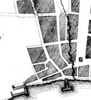

Southside is a descriptive term of convenience used to describe a "back street" neighborhood located in the southeastern part of old Albany. "Southside" occasionally was referenced in documents and records during the decades prior to the Revolution.
Centering roughly on the intersection of Beaver and Green Streets - and extending for a couple blocks in all directions, by the early 1700s, "Southside" was the home to a number of families of the members of the Albany garrison. These former soldiers formed the core of Albany's Anglo-Irish enclave for the next hundred years. In time, their descendants took their places as craftsmen, tradesmen, and transporters. A few moved up to enter the business class. Later, a number of inns and taverns provided comfort for Albany's growing English-speaking population. Richard Cartwright's "King's Arms" on Beaver Street was a centerpiece of this neighborhood and of English-speaking culture in Albany for several decades.
More generally, Southside was bounded by Pearl Street on the west, the stockade line on the south, Court Street, and the houses south of State Street. It represented a second stage of building (beyond the initial core centered by on the old Dutch church in the street at State and Market) in the development of colonial Albany. The Dutch church cemetery located along Hudson Street near the early stockade was a prominent landmark until after the Revolution.
To the south of Southside was an extensive tract of land owned by the Hallenbeck family. It extended to the Beaverkill and was developed more intensively following the death of "yeoman" Hendrick Hallenbeck in 1766. The South End (formerly the Pastures) was the predominately nineteenth century neighborhood located to the south of Southside.
By the 1750s, the settled area mostly along and closer to South Pearl Street was the home of an enclave of weavers.
By the 1770s, the newly published Albany Gazette referred to landmarks in the area being "in Cheapside."
By 1800, the western edge of this neighborhood was more well settled and is articulated in an image map.

Sources: We find little documentable evidence for the use of this term during the seventeenth and most of the eighteenth century. However, it has some utility in describing the working class area of the city south and west of State and Court streets.
posted 12/25/06; last revised 5/26/16